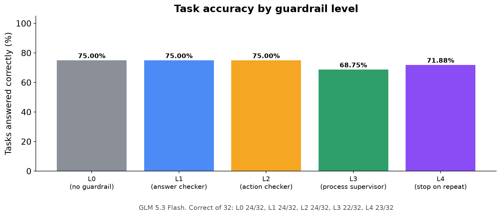
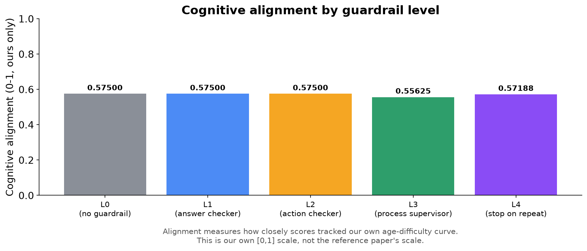
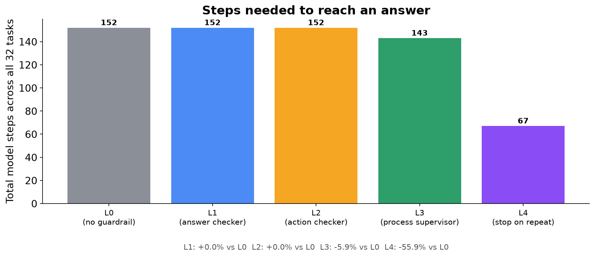
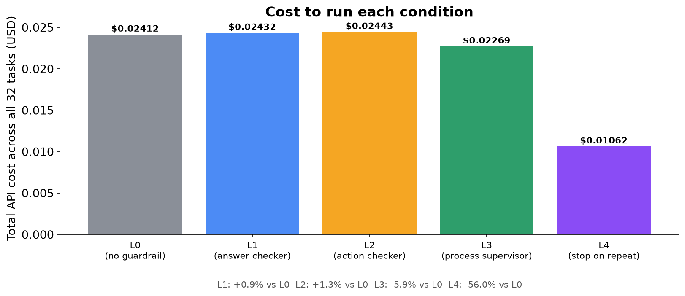
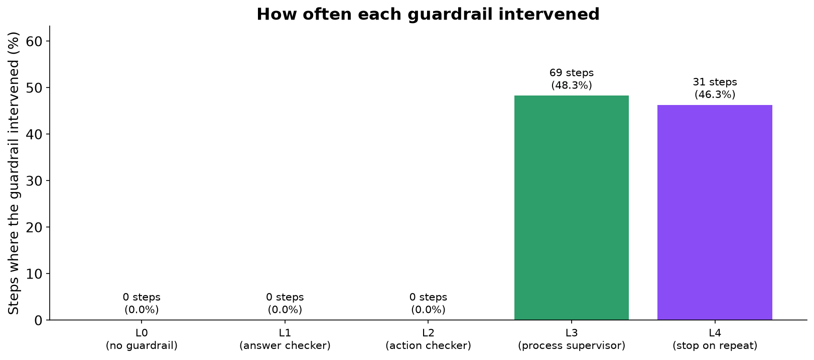
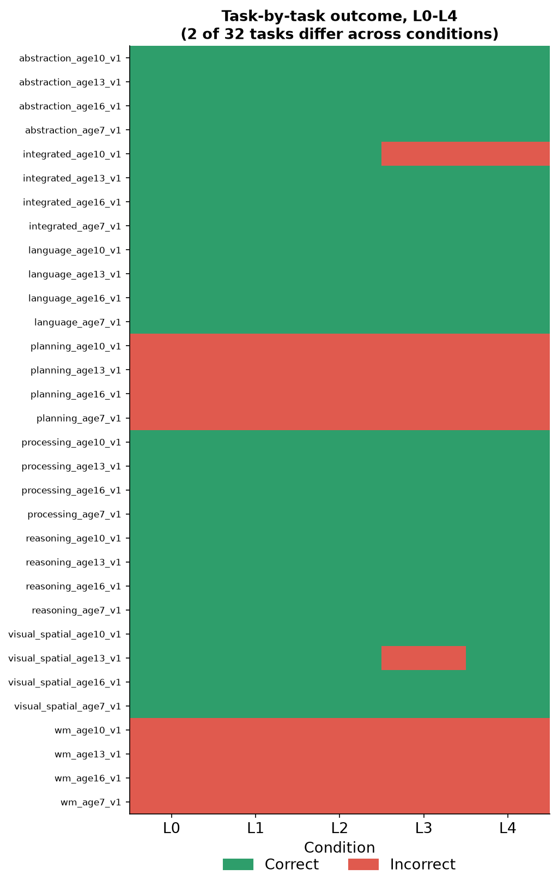
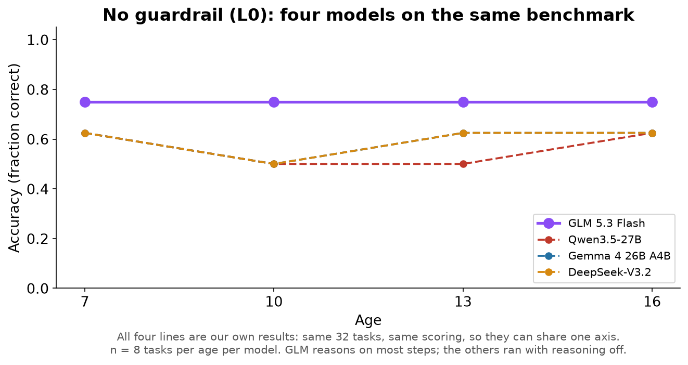
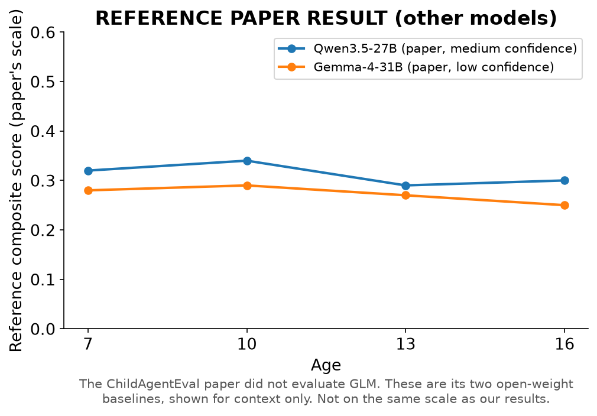
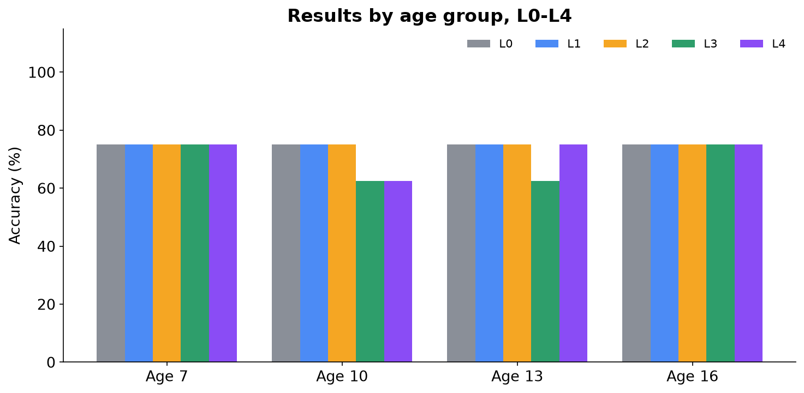
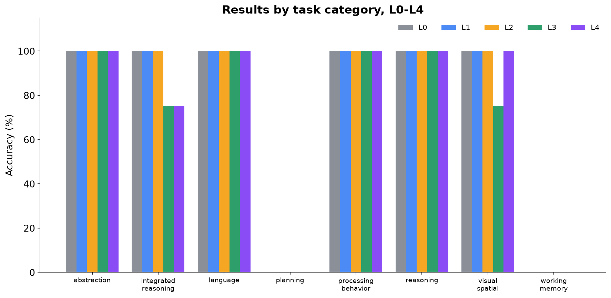

The Research Question
Do supervision systems ("guardrails") change what an AI agent actually does, or only how it gets there — and does the answer hold for a model that thinks before it acts?
We gave GLM 5.3 Flash the same 32 tasks and the same five levels of supervision (L0–L4) used for the other three models, and measured what changed: the answers it gave, and the path it took to get there.
Why This Matters
AI agents are increasingly trusted to click buttons, fill in forms and complete multi-step tasks on their own. If you add a layer that checks the agent's output, its actions, or its overall behaviour, does the agent actually perform better, or does it just look more supervised?
Three models have already given the same answer, but all three were answering instantly, without reasoning first. GLM 5.3 Flash always reasons before it answers, which makes it a different kind of test: does a model that thinks behave differently under supervision?
What We Built
- Model: GLM 5.3 Flash (
z-ai/glm-5.3-flash) via OpenRouter, temperature 0. - The one setting that differs: the other three models ran with reasoning switched off. GLM's service refuses that ("reasoning is mandatory"), so it ran at the lowest setting available. It still reasoned on about 9 out of 10 steps.
- Environment: a real Chromium browser, driven step by step by the model.
- Benchmark: the same 32 original tasks: 8 cognitive categories at 4 target ages (7, 10, 13, 16), one task per category per age.
- Measurement: every step, guardrail decision, token (including reasoning tokens) and dollar was logged automatically and scored afterwards.
What Are L0, L1, L2, L3, L4?
Think of them as increasing levels of a supervisor watching someone do a job:
| Level | Analogy | What it actually checks |
|---|---|---|
| L0 | No supervisor | Nothing. The agent works alone. |
| L1 | Answer checker | Rejects malformed or broken output format before it's used. |
| L2 | Action checker | Rejects invalid or clearly premature actions (e.g. giving up on step 1). |
| L3 | Process supervisor | Watches the whole trajectory: if the agent repeats itself, it inserts a pause; after 5 steps it ends the task. |
| L4 | Stop-on-repeat supervisor | Same as L3, except that the moment the agent repeats itself, it ends the task immediately instead of pausing. |
L0 is the plain baseline every other condition is compared against.
How the Experiment Worked
- 32 tasks × 5 conditions (L0–L4) = 160 task runs, plus a 2-task check run beforehand.
- Every task was run once under each condition, one condition after another.
- Everything was held identical across conditions except which guardrail was active.
- All 160 runs completed in full, with no retries and no errors. Total cost: $0.11.
Accuracy

Guardrails did not improve accuracy, and the small drops were not caused by them.
Our ResultL0, L1 and L2 each got 24 of 32 tasks right, on exactly the same tasks. L3 got 22 and L4 got 23. We traced each lost task:
- The one task L4 lost was a task where L4 never stepped in.
- On the two tasks L3 lost, the model was shown exactly the same thing at every step as under L0, and simply clicked a different final answer.
- All three are the two tasks where GLM already changes its mind mid-task even with no supervisor at all, so their result depends on which answer happens to come last.
Cognitive Alignment

No guardrail-driven change in cognitive alignment.
Our ResultAlignment was 0.575 in L0, L1 and L2, 0.556 in L3 and 0.572 in L4. These are the same task-level changes explained on Page 7. GLM's 0.575 is the highest of the four models, because it got more tasks right.
L3 and L4: Efficiency



L4 cut the work by more than half, for the fourth model in a row.
Our ResultOnly L3 and L4 intervened: 69 and 31 times, almost always because the agent clicked the same button again:
- L3: steps 152 → 143 (5.9% fewer), cost 5.9% lower
- L4: steps 152 → 67 (55.9% fewer), cost $0.0241 → $0.0106 (56.0% lower), including the reasoning tokens it no longer had to pay for
L1 and L2 recorded zero interventions: GLM never produced broken output or an invalid action.
Task-by-Task Result

30 of 32 tasks had the same result in every condition.
GLM got every one of the 24 multiple-choice tasks right under L0, L1 and L2, and every one of the 8 multi-step "click these in order" tasks wrong. The only changes are on two tasks (an arithmetic word problem and a rotation puzzle) where GLM wavers between two answers within a single task, even unsupervised.
What Does It Mean?
What we found
- No guardrail from L1 to L4 caused a change in GLM's answers (paired comparisons, n = 32 tasks, all p ≥ 0.58; 1.0 after correcting for multiple comparisons).
- L4 again cut steps and cost by more than half.
- All four models now show the same pattern: guardrails change efficiency, not answers.

Our ResultWithout guardrails, GLM is clearly the most accurate: 24 of 32, against 18–19 for the others (Gemma's and DeepSeek's lines overlap exactly). It is the only model to get every reasoning and visual-spatial task right. But it is also the only one that reasoned before answering, so we can't say how much of that lead is the model and how much is the thinking.
Our ResultEven with reasoning, GLM scored 0% on planning and working memory, failing exactly like the other three: it clicks the first item and then keeps clicking it. Four models, one of them reasoning, failing identically is strong evidence that the problem is the setup (the agent is never shown what it already clicked), not the models.
What we cannot claim
- We cannot compare GLM to the other models as equals: it reasoned and they didn't.
- We cannot place GLM on the original paper's scale: the paper never tested it.
- With one run per condition, a one- or two-task difference can't be told apart from chance.
What we learned
HypothesisGLM got every multiple-choice task right even at the "age 7" level. DeepSeek, by contrast, made childlike mistakes. Reasoning may override the prompt's instruction to answer like a child of the target age. Plausible, but not proven by this data.
Limitations and Next Steps
Limitations
- GLM's reasoning couldn't be turned off, so it isn't a like-for-like comparison with the other three models.
- One run per condition; 32 tasks in total.
- L1 and L2 never fired, so their effect is untested, not disproven.
- An original benchmark, not a validated psychometric instrument.
- No paper reference result exists for GLM.
What to test next
- Give the agent its own action history: four models now fail planning and working memory identically, which makes it the clearest bottleneck in the setup.
- Rerun one of the other models with reasoning on, to separate "GLM is stronger" from "GLM was allowed to think".
- Repeat each condition several times per model to measure variability properly.
- Run L5 on all four models once the Qwen L5 design is settled.
Additional Data
These figures give context and breakdowns referenced above, using the same real data.
A1. The paper's open-weight baselines Reference Paper Result

The ChildAgentEval paper (arXiv:2605.17894) reports results for Qwen3.5-27B and Gemma-4-31B as its open-weight models. It has no result for GLM. These lines are shown only for the same context as the other reports; they say nothing about GLM and aren't on our scale.
A2. Results by age group

Correct of 8: L0, L1 and L2 6/6/6/6; L3 6/5/5/6; L4 6/5/6/6 at ages 7/10/13/16. GLM's unsupervised score is exactly the same at every age.
A3. Results by task category

Perfect scores in six of the eight categories under L0, L1 and L2; zero in planning and working memory in every condition. Integrated reasoning and visual-spatial are where the L3/L4 single-task changes show up.